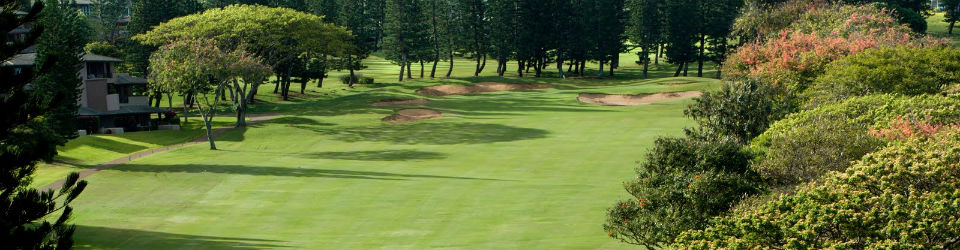

News
Cocoa League Update
Karen has set aside 3 tee times on Wednesdays and Thursdays during
the month of November for the cocoa league, except for Nov 11th and 25th
(both being holidays). The tee times begin at 11:00, so ladies should
arrive by 10:30 to secure a spot. There is room for 12 ladies and it's
first come, first served.
Please remember - The regulation time for the course is 2 hours and 10 minutes. To achieve this pace please play "ready" golf and limit practice swings. Golfers should advance their ball to the green at double par , on hole five if you have reached 8 stokes. Thank you for your co-operation.
Remember to cancel your tee time if you can't play
Jefferson Starter 703 573-0444 Ext 2 beginning at 6:30am
Arrive 30 minutes before your tee time
Bad Weather? Call starter ASAP to cancel your tee time.
If you DO plan to play, CALL or arrive EARLY to fill spots created by cancellations.
Updates
Are your 2011 membership dues paid? Check member payment Notify us of an address, phone or email change Member info Update
Sunshine news updated 11/14
When golf is not challenging enough try this �
http://www.wimp.com/gongshot
Reports are updated